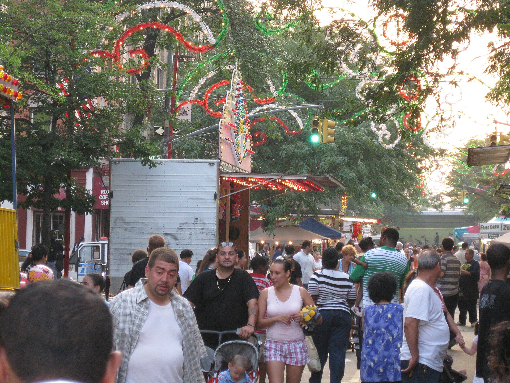

Fall 2026 Bronx Events Calendar: Festivals, Concerts and Free Days for Chill Adults
Ferragosto, big nights at Lehman Center, the Bronx Museum's return and a Night Market finale, rated for relaxed grown-ups.

Key takeaways
- Ferragosto takes over Arthur Avenue Sunday, Sept. 13, noon to 6 p.m., free, and earns our top 5/5 rating.
- The Bronx Museum reopens Oct. 9 with free admission; the Night Market's final date is Oct. 10.
- Lehman Center's fall slate includes Sonora Carruseles, Milly Quezada and Ginuwine; seated shows score 3/5.
- Parks, venues and restaurants are smoke-free. Partake at home, start low, and never drive high.
Summer in the Bronx is on its last lap: the Bronx Summer Concert Series at Orchard Beach wraps up on September 6. That's fine. Fall is better. The air cools, the festivals get tastier, the concert halls fill up, and the borough's museums and gardens start calling to anyone who likes a slow afternoon.
This is the Free Press fall calendar for chill adults, 21+ and otherwise. Every listing comes with a Friendliness note and, where it applies, a smoke-free reminder, because nothing ruins a good day like a civil summons.
How to Read the Friendliness Notes
We rate each event on our 1-to-5 leaf scale, written as "Friendliness: 4/5." It's an editorial score, not a review, and it weighs the vibe (relaxed or high-pressure?), late hours, munchie value, proximity to a licensed dispensary, and the legality of consuming nearby. That last factor is simple for almost every event on this list: venues, restaurants, parks and gardens are smoke-free. The best-scoring events are the ones you can enjoy after partaking responsibly at home. Full methodology on our Cannabis Friendliness Index page.
September
Sat., Sept. 12: ¡BAILA! at the Bronx Music Hall
The Bronx Music Hall at 438 E 163rd St kicks off the season with ¡BAILA!, and the name tells you the assignment: dance. Check the venue for times and tickets.
Friendliness: 4/5. Great energy, easy transit. Indoor venue, so it's smoke-free.
Sun., Sept. 13: Ferragosto on Arthur Avenue
The biggest food day of the fall. Bronx Little Italy's Ferragosto runs noon to 6 p.m., rain or shine, on Arthur Avenue between East 187th Street and Crescent Avenue. Admission is free; food and drinks are for sale. Two licensed dispensaries, Freshly Baked NYC and Guardian Wellness, are on the avenue.
Friendliness: 5/5. Maximum munchie value and walkable legal shopping. Just don't light up in the crowd or at outdoor tables. Plan your route with our Arthur Avenue munchies crawl.
Sat., Sept. 19: Bronx Rising at the Bronx Music Hall
Another night at the 163rd Street venue, and a good excuse to see what local talent is building on a Bronx stage.
Friendliness: 4/5. Same rules: smoke-free inside, and take transit home.
Sat., Sept. 26: Grupo Galé and Sonora Carruseles at Lehman Center
A double bill at the Lehman Center for the Performing Arts, 8 p.m. Tickets at 718-960-8833.
Friendliness: 3/5. Fantastic show, but it's a seated theater on a college campus. Keep it clear-headed or very low-dose.
The best-scoring events are the ones you can enjoy after partaking responsibly at home.
October
Sat., Oct. 3: Son de Cuba at Lehman Center
An 8 p.m. show. Friendliness: 3/5.
Fri., Oct. 9: The Bronx Museum Reopens
The Bronx Museum of the Arts at 1040 Grand Concourse is closed through Oct. 8 and reopens Oct. 9. Admission is always free.
Friendliness: 5/5. Free, quiet, contemplative and on the Concourse. An art museum is one of the best places in the borough to spend a mellow afternoon, as long as you consume at home first and keep it low-key.
Sat., Oct. 10: Bronx Night Market, Final Date
The season's last Bronx Night Market runs noon to 7 p.m. at 161st Street and Grand Concourse. It's free with RSVP.
Friendliness: 5/5. A food market is basically a munchies festival. It's a public event, so no smoking on-site; eat, browse and take the leftovers home. CONBUD Yankee Stadium at 898 Gerard Ave and Buddiez Bronx Cannabis Dispensary at 2935 Third Ave are both in the South Bronx.
Sat., Oct. 17: Milly Quezada and Miriam Cruz at Lehman Center
A big Saturday-night bill at 8 p.m. Friendliness: 3/5.
Sat., Oct. 24: Paul Taylor Dance Company at Lehman Center
Dance at 8 p.m. Friendliness: 3/5. A sit-still, pay-attention kind of night.
November
Sat., Nov. 7: Ginuwine and Ro James at Lehman Center
An 8 p.m. show. Friendliness: 3/5. Date-night energy; take a car service or the train, never drive high.
Sat., Nov. 14: Luis Vargas and Monchy at Lehman Center
Another 8 p.m. double bill. Friendliness: 3/5.
Heads-up: The Hemp Cap Arrives
This November, a federal limit of 0.4 milligrams of total THC per container is scheduled to take effect for hemp products, along with a ban on synthetic cannabinoids, the state Office of Cannabis Management has advised. Congress has been debating whether to delay it; the Free Press will update if that changes. If it holds, many intoxicating hemp products sold in bodegas and smoke shops should disappear. Regulated cannabis sold by state-licensed dispensaries is a separate category and stays on the shelves. Details in our hemp ban explainer.
Every Week: The Standing Plans
- NY Botanical Garden, Wednesdays: Free for NYC residents at 2900 Southern Blvd. Friendliness: 4/5, a garden stroll is peak chill, but the grounds are smoke-free.
- Bronx Zoo, Wednesdays: Free with advance tickets. Friendliness: 3/5, fun but crowded with families; keep it clear-headed.
- Wave Hill, Thursdays: Free Thursdays at 4900 Independence Ave; open Tuesday through Sunday, 10 a.m. to 5:30 p.m. Friendliness: 5/5 for vibe alone: gardens, quiet paths and zero rush. Smoke-free grounds.
- Hip Hop Museum Culture Lab, Wed–Sat: 658 Exterior St, 11 a.m. to 6 p.m., while the full museum readies a spring 2027 opening. Friendliness: 4/5. Background in our hip hop and cannabis culture map.
- Bowlerland, Fri–Sat nights: 2417 Hollers Ave, open until 1 a.m., cash. Friendliness: 4/5 for late hours and a low-stakes group hang.
- An Beal Bocht Cafe: 445 W 238th St, an Irish pub with live music, open until 2 a.m. Friendliness: 2/5; it's a bar, and mixing alcohol and cannabis hits harder.
Plan the Weekend Like a Pro
- Shop early in the week. Friday evenings and festival Sundays are when lines get long and hours get tight.
- Order ahead. Many licensed stores take online orders for in-store pickup, so you're in and out.
- Bring ID and budget for tax. You must be 21+ with photo ID, and expect 13% tax at checkout (9% state, 4% local).
- Know the delivery rules. Under state rules, licensed delivery only runs during a dispensary's hours, only to homes and private businesses, never to parks or event sites. Check our Bronx delivery hub and confirm your zone at checkout.
- Map the ride home first. Train, bus or car service. Driving high is illegal.
The Fall Calendar at a Glance
| Date | Event | Where | Cost | Friendliness |
|---|---|---|---|---|
| Sept. 12 | ¡BAILA! | Bronx Music Hall | Check venue | 4/5 |
| Sept. 13 | Ferragosto | Arthur Ave | Free | 5/5 |
| Sept. 19 | Bronx Rising | Bronx Music Hall | Check venue | 4/5 |
| Sept. 26 | Grupo Galé & Sonora Carruseles | Lehman Center | Ticketed | 3/5 |
| Oct. 9 | Bronx Museum reopens | 1040 Grand Concourse | Free | 5/5 |
| Oct. 10 | Bronx Night Market finale | 161st St & Grand Concourse | Free w/ RSVP | 5/5 |
| Oct. 17 | Milly Quezada & Miriam Cruz | Lehman Center | Ticketed | 3/5 |
| Nov. 7 | Ginuwine & Ro James | Lehman Center | Ticketed | 3/5 |
| Weekly | Wave Hill free Thursdays | Riverdale | Free Thu | 5/5 |
The Free Press Take
The Bronx's fall lineup rewards people who plan. Shop on a weekday, consume at home, and treat the festival, museum or concert as the main event. If you're in the South Bronx, you can stock up before the weekend with order-ahead pickup at Buddiez, a Free Press sponsor, or pick any licensed store from our dispensary map. Then go eat, dance and look at some art.
Frequently asked questions
When is Ferragosto 2026 on Arthur Avenue?
Sunday, Sept. 13, from noon to 6 p.m., rain or shine, on Arthur Avenue between East 187th Street and Crescent Avenue. Admission is free.
When does the Bronx Museum reopen?
The Bronx Museum of the Arts at 1040 Grand Concourse is closed through Oct. 8 and reopens Oct. 9, 2026. Admission is always free.
When is the last Bronx Night Market of 2026?
Saturday, Oct. 10, from noon to 7 p.m. at 161st Street and Grand Concourse. It's free with RSVP.
Can I smoke at outdoor Bronx events?
Not in parks, pedestrian plazas, outdoor dining areas or venues, where city law bans it. The safest plan is to partake at home.